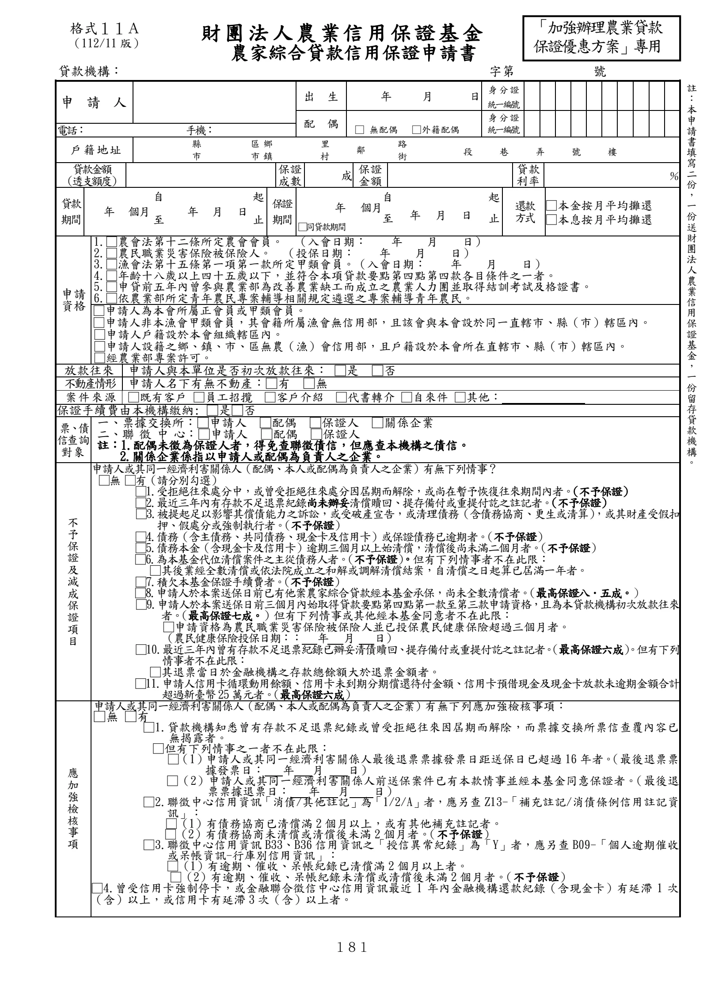
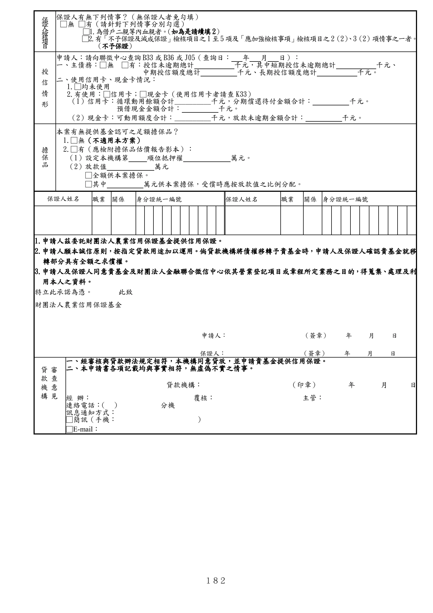

格式 11A：農家綜合貸款信用保證申請書
正式書表版面請以原始PDF為準
下列擷取文字僅供搜尋與輔助查閱，未重新設計為線上表單。
手冊頁：181 PDF頁：195／203

查看PDF文字層
下列文字取自PDF既有文字層，僅供搜尋、複製與無障礙輔助。複雜表格的欄列位置可能失真，正式內容請以原頁預覽或PDF為準。
財團法人 農業信用保證基金
農家綜合貸款信用保證申請書
貸款機構： 字第 號
申 請 人
出 生 年 月 日 身 分 證
統一編號
配 偶
□ 無配偶 □外籍配偶
身 分 證
統一編號
電話： 手機：
戶 籍 地 址 縣
市
區鄉
市鎮
里
村 鄰 路
街 段 巷 弄 號 樓
貸款金額
（透支額度）
保證
成數 成 保證
金額 貸款
利率 ％
貸款
期間 年 個月
自
至 年 月 日
起
止
保證
期間
年 個月 自
至 年 月 日
起
止
還款
方式
□本金按月平均攤還
□本息按月平均攤還 □ □同貸款期間
申請
資格
1.□農會法第十二條所定農會會員。 （入會日期： 年 月 日）
2.□農民職業災害保險被保險人。 （投保日期： 年 月 日）
3.□漁會法第十五條第一項第一款所定甲類會員。（入會日期： 年 月 日）
4.□年齡十八歲以上四十五歲以下，並符合本項貸款要點第四點第四款各目條件之一者。
5.□申貸前五年內曾參與農業部為改善農業缺工而成立之農業人力團並取得結訓考試及格證書。
6.□依農業部所定青年農民專案輔導相關規定遴選之專案輔導青年農民。
□申請人為本會所屬正會員或甲類會員。
□申請人非本漁會甲類會員，其會籍所屬漁會無信用部，且該會與本會設於同一直轄市、縣（市）轄區內。
□申請人戶籍設於本會組織轄區內。
□申請人設籍之鄉、鎮、市、區無農（漁）會信用部，且戶籍設於本會所在直轄市、縣（市）轄區內。
□經農業部專案許可。
放款往來 申請人與本單位是否初次放款往來： □是 □否
不動產情形 申請人名下有無不動產：□有 □無
案 件 來 源 □既有客戶 □員工招攬 □客戶介紹 □代書轉介 □自來件 □其他：
保證手續費由本機構繳納: □是□否
票、債
信查詢
對象
一、票據交換所：□申請人 □配偶 □保證人 □關係企業
二、聯 徵 中 心：□申請人 □配偶 □保證人
註：1.配偶未徵為保證人者，得免查聯徵債信，但應查本機構之債信。
2.關係企業係指以申請人或配偶為負責人之企業。
不
予
保
證
及
減
成
保
證
項
目
申請人或其同一經濟利害關係人（配偶、本人或配偶為負責人之企業）有無下列情事？
□無 □有（請分別勾選）
□1.受拒絕往來處分中，或曾受拒絕往來處分因屆期而解除，或尚在暫予恢復往來期間內者。（不予保證）
□2.最近三年內有存款不足退票紀錄尚未辦妥清償贖回、提存備付或重提付訖之註記者。（不予保證）
□3.被提起足以影響其償債能力之訴訟，或受破產宣告，或清理債務（含債務協商、更生或清算） ，或其財產受假扣
押、假處分或強制執行者。 （不予保證）
□4.債務（含主債務、共同債務、現金卡及信用卡）或保證債務已逾期者。 （不予保證）
□5.債務本金（含現金卡及信用卡）逾期三個月以上始清償，清償後尚未滿二個月者。 （不予保證）
□6.為本基金代位清償案件之主從債務人者。 （不予保證）。但有下列情事者不在此限：
□其後業經全數清償或依法院成立之和解或調解清償結案，自清償之日起算已屆滿一年者。
□7.積欠本基金保證手續費者。 （不予保證）
□8.申請人於本案送保日前已有他案農家綜合貸款經本基金承保，尚未全數清償者。 （最高保證八．五成。）
□9.申請人於本案送保日前三個月內始取得貸款要點第四點第一款至第三款申請資格，且為本貸款機構初次放款往來
者。（最高保證七成。）但有下列情事或其他經本基金同意者不在此限：
□申請資格為農民職業災害保險被保險人並已投保農民健康保險超過三個月者。
（農民健康保險投保日期：： 年 月 日）
□10.最近三年內曾有存款不足退票紀錄已辦妥清債贖回、提存備付或重提付訖之註記者。（最高保證六成） 。但有下列
情事者不在此限：
□其退票當日於金融機構之存款總餘額大於退票金額者。
□11.申請人信用卡循環動用餘額、信用卡未到期分期償還待付金額、信用卡預借現金及現金卡放款未逾期金額合計
超過新臺幣25萬元者。 （最高保證六成）
應
加
強
檢
核
事
項
申請人或其同一經濟利害關係人（配偶、本人或配偶為負責人之企業）有無下列應加強檢核事項：
□無 □有
□1.貸款機構知悉曾有存款不足退票紀錄或曾受拒絕往來因屆期而解除，而票據交換所票信查覆內容已
無揭露者。
□但有下列情事之一者不在此限：
□（1）申請人或其同一經濟利害關係人最後退票票據發票日距送保日已超過 16年者。（最後退票票
據發票日： 年 月 日）
□（2）申請人或其同一經濟利害關係人前送保案件已有本款情事並經本基金同意保證者。（最後退
票票據退票日： 年 月 日）
□2.聯徵中心信用資訊「消債/其他註記」為「1/2/A」者，應另查 Z13-「補充註記/消債條例信用註記資
訊」：
□（1）有債務協商已清償滿 2個月以上，或有其他補充註記者。
□（2）有債務協商未清償或清償後未滿 2 個月者。 （不予保證）
□3.聯徵中心信用資訊 B33、B36 信用資訊之「授信異常紀錄」為「Y」者，應另查 B09-「個人逾期催收
或呆帳資訊-行庫別信用資訊」：
□（1）有逾期、催收、呆帳紀錄已清償滿 2個月以上者。
□（2）有逾期、催收、呆帳紀錄未清償或清償後未滿 2個月者。 （不予保證）
□4.曾受信用卡強制停卡，或金融聯合徵信中心信用資訊最近 1 年內金融機構還款紀錄（含現金卡）有延滯 1 次
（含）以上，或信用卡有延滯 3次（含）以上者。
格式１１Ａ
（112/11 版）
註
：
本
申
請
書
填
寫
二
份
，
一
份
送
財
團
法
人
農
業
信
用
保
證
基
金
，
一
份
留
存
貸
款
機
構
。
「加強辦理農業貸款
保證優惠方案」專用手冊頁：182 PDF頁：196／203

查看PDF文字層
下列文字取自PDF既有文字層，僅供搜尋、複製與無障礙輔助。複雜表格的欄列位置可能失真，正式內容請以原頁預覽或PDF為準。
保證人檢核項目
保證人有無下列情事？（無保證人者免勾填）
□無 □有（請針對下列情事分別勾選）
□1.為借戶二親等內血親者。（如為是請續填2）
□2.有「不予保證及減成保證」檢核項目之1至5項及「應加強檢核事項」檢核項目之2（2）、3（2）項情事之一者。
（不予保證）
授
信
情
形
申請人：請向聯徵中心查詢B33或B36或J05（查詢日： 年 月 日）：
一、主債務：□無 □有：授信未逾期總計 千元，其中短期授信未逾期總計 千元、
中期授信額度總計 千元、長期授信額度總計 千元。
二、使用信用卡、現金卡情況：
1.□均未使用
2.有使用：□信用卡；□現金卡（使用信用卡者請查 K33）
（1）信用卡：循環動用餘額合計__________千元，分期償還待付金額合計： 千元。
預借現金金額合計： 千元。
（2）現金卡：可動用額度合計：__________千元，放款未逾期金額合計： 千元。
擔
保
品
本案有無提供基金認可之足額擔保品？
1.□無（不適用本方案）
2.□有（應檢附擔保品估價報告影本）：
（1）設定本機構第 順位抵押權 萬元。
（2）放款值 萬元
□全額供本案擔保。
□其中 萬元供本案擔保，受償時應按放款值之比例分配。
保證人姓名 職業 關係 身分證統一編號 保證人姓名 職業 關係 身分證統一編號
1.申請人茲委託財團法人農業信用保證基金提供信用保證。
2.申請人願本誠信原則，按指定貸款用途加以運用。倘貸款機構將債權移轉予貴基金時，申請人及保證人確認貴基金就移
轉部分具有全額之求償權。
3.申請人及保證人同意貴基金及財團法人金融聯合徵信中心依其營業登記項目或章程所定業務之目的，得蒐集、處理及利
用本人之資料。
特立此承諾為憑。 此致
財團法人農業信用保證基金
申請人： （簽章） 年 月 日
保證人： （簽章） 年 月 日
審
查
意
見
貸
款
機
構
一、經審核與貸款辦法規定相符，本機構同意貸放，並申請貴基金提供信用保證。
二、本申請書各項記載均與事實相符，無虛偽不實之情事。
貸款機構： （印章） 年 月 日
經 辦： 覆核： 主管：
連絡電話： （ ） 分機
訊息通知方式：
□簡訊（手機： ）
□E-mail：